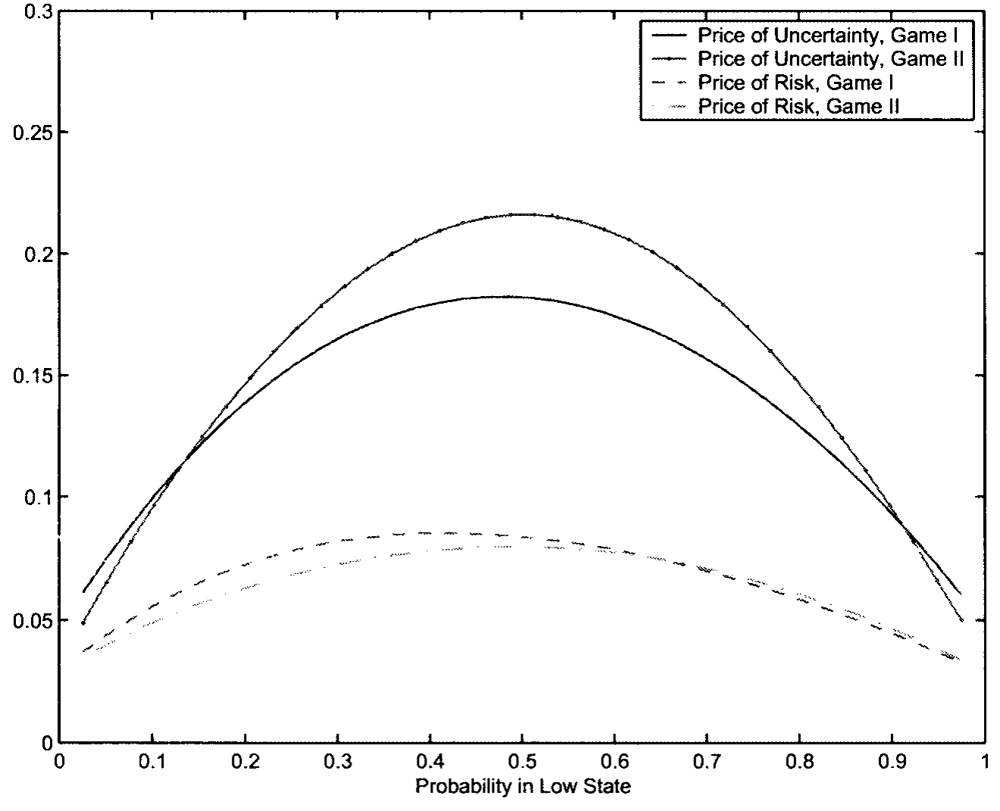
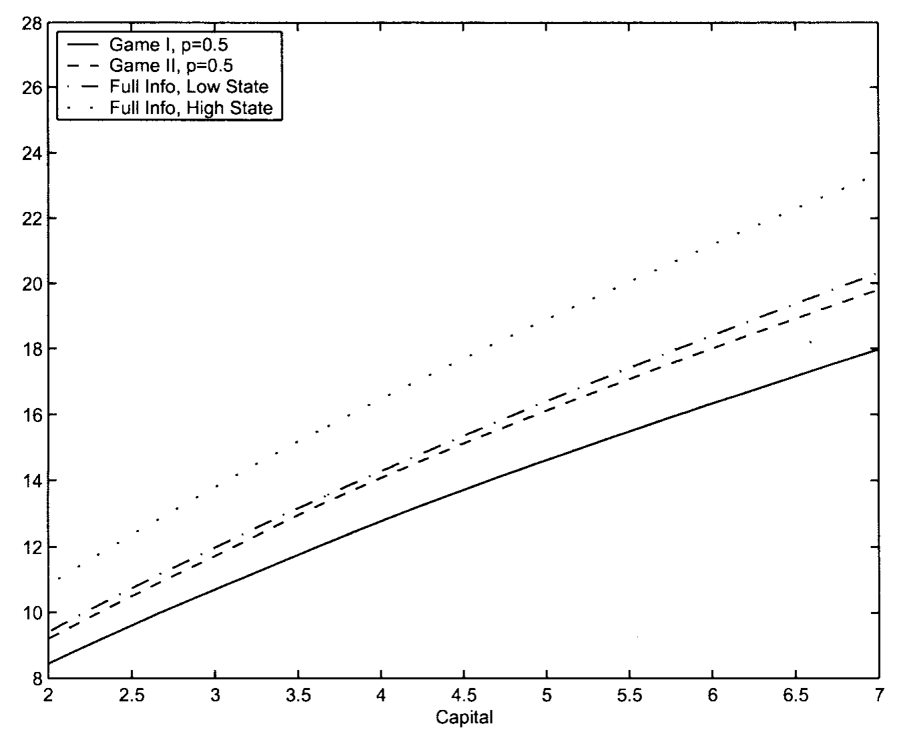
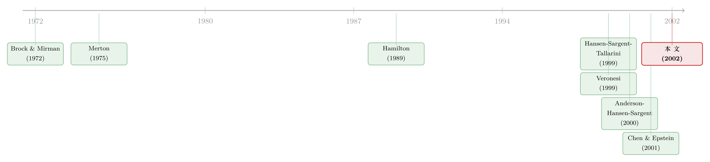

连续时间里，资本「没有风险」——那风险溢价从哪儿来？
本文读的是 Cagetti, Hansen, Sargent & Williams (2002, RFS)：把一台标准的随机增长模型，交给一个「不相信自己模型」的投资者。当他担心自己对技术增长的设定可能有偏差、于是假想一个恶意对手在暗中扰动数据生成过程时，他会变得更谨慎——这份谨慎放大了风险的市场价格、压低了价格—股利比。最反直觉的一点是：这份「稳健」几乎看不进宏观数量（资本几乎不动），却清清楚楚地写进了价格。
1 一个让人难堪的事实：资本「不抖」
先讲一件让宏观经济学家不太舒服的事。
我们手里有一台最经典、最干净的增长模型——Brock 和 Mirman (1972) 那台。一个代表性投资者，一份 Cobb–Douglas 生产函数，资本会折旧、会积累，技术会随机地往上漂。它是几乎所有动态宏观与资产定价的「实验室小白鼠」。
可一旦你把它放进连续时间 (continuous time)，一件尴尬的事情就发生了。Merton (1975) 早就指出过：在这个连续时间的版本里，资本的回报会变成「局部无风险 (locally riskless)」的。直觉并不难——资本是「局部可预测 (locally predictable)」的状态变量，它今天的增量里没有那个会突然跳一下的布朗冲击，冲击全砸在技术 Y 上，而资本要靠慢慢积累才能感受到。于是在任意一个瞬间，持有资本几乎是一笔确定的买卖。
一笔确定的买卖，要什么风险溢价呢？
这就是全文的张力所在。我们都知道现实世界的股权溢价 (equity premium) 高得离谱，高到 Hansen 和 Jagannathan (1991)、Cochrane 和 Hansen (1992) 用宏观模型怎么也凑不出来——这台标准模型给出的风险的市场价格 (market price of risk) 小得可怜，小到「不可信」。本应该最能解释增长与投资的模型，偏偏在「风险」这件事上交了白卷。
那么，风险溢价到底能从哪儿冒出来？
2 第一条岔路：把增长「藏起来」
一个自然的修补思路是：让投资者看不清。
现实中没人能直接观测到「经济现在是在扩张还是衰退」。技术的增长率是高是低，是藏在数据背后的。于是本文给技术增长率设了一个两状态隐马尔可夫模型 (two-state hidden Markov model, HMM)：增长率 s 在「高增长」和「低增长」两个状态间按一个连续时间的马尔可夫链跳转，但投资者只能观测到技术水平 y 本身，看不到它此刻处在哪个状态。
技术的演化写出来就是论文的方程 (1)：
$$ dy_t = s_t \cdot \hat\mu\, dt + \sigma_y\, dB_t $$
这里 y = log Y，B 是标准布朗运动 (Brownian motion)，s_t 标记当前增长状态，\hat\mu 装着各状态对应的增长率。投资者面对的，是一个信号提取 (signal extraction) 问题：他得用当下和过去的 y，去推断那个看不见的 s。
这套滤波最早是 Wonham (1964) 做的，David (1997)、Veronesi (1999) 把它搬进了资产定价。它的妙处是：投资者关于「现在是不是低增长」的信念，本身会变成一个会演化的状态变量。记 \hat p_t 为各状态概率向量，它满足方程 (5)：
$$ d\hat p_t = A'\hat p_t\, dt + \sigma_{\hat p}(\hat p_t)\, d\bar B_t,\qquad \sigma_{\hat p}(\hat p) = \frac{1}{\sigma_y}\,\hat P\,\big(I - \mathbf{1}\,\hat p^{\top}\big)\,\hat\mu $$
而新信息则由新息过程 (innovation process) \bar B 携带，它就是方程 (6)：
$$ d\bar B_t = \frac{1}{\sigma_y}\big(dy_t - \hat\mu\cdot s_t\, dt\big) = dB_t + \frac{\hat\mu\cdot(s_t - \hat p_t)}{\sigma_y}\, dt $$
接着，把技术与资本都改写到投资者「看得见」的这套新息下，就得到方程 (7)、(8)：
$$ dy_t = \hat\mu\cdot\hat p_t\, dt + \sigma_y\, d\bar B_t,\qquad dk_t = \hat\mu_k(c,k,\hat p_t)\,dt + \sigma_k(k)\, d\bar B_t $$
这里 k = K/Y 是资本—技术比 (capital-technology ratio)，因为原始的 K 有单位根、不平稳，而 k 是平稳的。它的漂移与扩散，来自对 K 用伊藤引理（方程 (3)）：
$$ \mu_k(c,k,s) \equiv k^{\alpha} - c - \Big( s\cdot\hat\mu + \delta - \frac{(\sigma_y)^2}{2}\Big)k,\qquad \sigma_k(k) = -\sigma_y k $$
到这一步，模型已经有了两个核心状态变量：「身处低增长状态的概率」\hat p 和 「资本—技术比」k。信念在变，时变的信息质量自然会让风险价格、让股利—价格比也跟着时变——这很漂亮。
但真正关键的一点是：光靠「藏起来」是不够的。 作者说得很直白：这套隐藏信息的机制能改变风险价格与股利—价格比的时序形态，却产生不出大到经验上可信的风险溢价。岔路走到头，溢价的「量级」问题依然没解决。
别把「学习/隐藏信息」当成股权溢价的答案。它能让风险价格随行情起伏（这正是 David & Veronesi 那条线的贡献），但撑不起溢价的高度。本文之所以要请出「稳健性」，正是因为这条岔路在量级上失败了。
3 真正的那一步：请一个「恶意对手」上桌
于是反转出现了。
本文与绝大多数宏观和金融文献分道扬镳的地方在于：它不再假设投资者相信自己手里那台 HMM。投资者把这台模型只当成一个近似 (approximating model)——它也许大致对，但谁敢说技术的真实动态没有更复杂的函数形式、没有更长的历史依赖？
一个不敢全信自己模型的人会怎么做决策？沿着控制论的思路，本文把它写成一个两人博弈 (two-player game)：投资者一边最大化贴现效用，一边假想有一个恶意对手 (malevolent agent)，会从一大族「与近似模型很接近」的备选模型里，专挑那个让他效用最低的来扰动数据生成过程。投资者于是去求一个对这种最坏情形的最佳响应——这样得到的决策规则，就对模型设定的偏差稳健 (robust)。
为什么是「最坏情形」？这正是 Huber (1981) 在讨论最优稳健统计程序时的洞见：既然稳健意味着对假设的小偏离不敏感，那任何稳健性的度量，都必然关心「在 ε-偏离下性能可能的最大退化」；而最优稳健程序，就是去最小化这种最大退化——本质上是一种 minimax。
但「最坏」不能毫无约束，否则对手可以把模型扭曲到天上去。所以作者给恶意对手的扭曲加了一个惩罚项：用相对熵 (relative entropy)——一个建立在对数似然比上的、衡量两个模型「有多容易被统计区分」的距离——来度量扭曲后的模型离近似模型有多远。对手扭得越狠、相对熵越大、惩罚越重。换句话说，只有那些「在历史数据下都难以被检验拒绝」的模型，才被允许进入投资者的担忧清单。
这套逻辑的recursive形式，沿用 Anderson, Hansen & Sargent (2000) 的标准记号，可以写成一个带惩罚的 max–min（HJB–Isaacs）方程。我把最核心的那一个方程拆开标注如下：
把这个 max–min 解出来，效果可以一句话概括：对模型误设的担忧，让投资者更谨慎，从而放大了被测到的风险溢价。它强化了原本就存在的预防性动机 (precautionary motive)——而且这种强化不需要二次型偏好就成立。（关于「不信任自己的模型」如何在组合层面撑起股权溢价，可参见《当投资者不再相信自己的模型：稳健性如何撑起股权溢价》；关于稳健投资者如何随行情在「乐观/悲观」间切换，可参见《悲观与乐观的浪潮：当「稳健」的投资者学会了随行情换尺子》。）
θ 这个旋钮不能随便拧。本文的高明之处，是用「统计检验」来约束「稳健性」：如果允许的扭曲大到能被历史数据轻松识别出来，那这种担忧就不合理。作者据此把 θ 限制在一个「连统计学家都难以分辨真伪」的区间内——结论是，即便只允许极小的、几乎检验不出的扭曲，对价格的影响也已经在量上举足轻重。
4 数据：把战后美国，读成「短衰退 + 长扩张」
模型要落地，得给那台 HMM 喂真实数据。
作者用的是 Citibase 的累积索洛残差 (cumulative Solow residual) y，构造方式follow Stock 和 Watson (1999)：用产出（GDP 剔除农业、住房、政府）、资本（年度非住宅固定资本存量按季度投资插值）、劳动（非农雇员工时），取劳动份额 0.65 算出可解释为劳动增进型技术的残差。样本是季度数据，1959:Q1 到 1999:Q2。
然后用 EM 算法对离散时间数据做极大似然估计（Hamilton, 1990 的做法），把估出的季度转移概率通过 T_τ = exp(τ A) 翻译成连续时间的强度矩阵。结果在 Table 1 里：
- 高增长状态
\hat\mu_1 = 0.0114（季度），低增长状态\hat\mu_2 = -0.0290； - 技术冲击标准差
\sigma_y = 0.0192； - 高增长状态平均持续
1/a_{12} = 13.58个季度，低增长状态平均只持续1/a_{21} = 2.84个季度。
一句话：战后美国是「短促的衰退 + 漫长的扩张」。这和 Hamilton (1989) 对产出增长的经典刻画完全合拍。值得一提的是，本文刻意把波动率 \sigma_y 设成与状态无关——不让衰退期「波动更大」——为的是让两个状态难以从高频数据里被一眼认出，从而让「信息质量会波动」这件事有用武之地。（如果允许状态影响波动，连续的数据记录会很快暴露状态，稳健性的舞台就塌了。）
5 三个结论，与那个反转
把稳健性塞进这台模型后，作者报告了三件事——而真正的故事，藏在它们之间的对比里。
第一，稳健的预防性储蓄推高了资本存量。 这把 Hansen, Sargent & Tallarini (1999) 的结论从线性经济推广到了非线性经济。但紧接着一个反转：这份「多存的资本」可以被「让投资者更不耐烦地贴现未来」所抵消。于是结论是——在没有关于主观贴现因子的先验信息时，你根本无法只从宏观数量里看出投资者是否在乎稳健性。稳健，在数量上隐了身。
第二，稳健性给风险—收益权衡加上了一块「量上举足轻重」的成分。 这块由稳健性贡献的风险价格，对「增长状态概率」\hat p 特别敏感——当投资者在近似模型下对隐藏状态最没把握的时候，它最大。这一点直觉上很顺：你越拿不准现在到底是好是坏，那个恶意对手能钻的空子就越大，你要求的补偿也越高。模型不确定性的价格如何随 k 而动，见图 6。

Figure 6: shows the prices of model uncertainty as functions of k (the
第三，稳健性把价格—股利比压向了战后数据的真实水平。 而且，与风险价格相反，这些比率主要被资本—技术比 k 牵着走，对增长状态概率 \hat p 几乎无动于衷。价格—盈利比随 k 的变化见图 10。

Figure 10: shows how the price-earnings ratios vary with k (the capital-
把后两条放在一起，就是全文最漂亮的「分工」：风险价格的时序，由信念 \hat p 主导；股利—价格比的时序，由资本—技术比 k 主导。 而这两条，在一个「只在乎风险、不在乎稳健」的对应 HMM 理性预期经济里也有各自的影子——稳健性做的，是把风险价格那一块的量级给补足了。
于是，那个贯穿全文的张力得到了回答：连续时间里资本确实「不抖」，靠它本身榨不出风险溢价；藏起增长状态能让溢价「会动」却不够「大」；真正把溢价撑到可信高度的，是投资者对自己模型的那一份不信任。
6 文献脉络
这条研究有两条河流，在本文交汇。
一条是增长模型 + 隐藏信息的资产定价线。源头是 Brock 和 Mirman (1972) 的随机增长模型与 Merton (1975) 对其连续时间极限的刻画（正是后者点出了「资本局部无风险」这个难题）；Hamilton (1989) 给出了用两状态机制刻画美国经济周期的经典范式；David (1997) 与 Veronesi (1999) 则把 Wonham (1964) 的隐藏状态滤波搬进了生产经济与禀赋经济的定价里，让「信息质量波动」成为驱动价格的引擎。
另一条是稳健控制 / 模型不确定性的偏好线。它脱胎于 Huber (1981) 的稳健统计与 Basar–Bernhard 的 minimax 控制；Hansen, Sargent & Tallarini (1999) 把稳健性带进了宏观与定价（永久收入框架），Anderson, Hansen & Sargent (2000) 与 Chen 和 Epstein (2001) 则在连续时间里刻画了「模型不确定性的价格」这一额外风险价格成分。

本文的位置，正是把这两条河流接到了同一台非线性、连续时间、带隐藏增长状态的增长经济上：既保留了信号提取带来的时变信息质量，又用稳健性补上了溢价的量级，还干净地分清了「信念」与「资本」各自驱动了什么。（顺带一提，这篇论文当年配有一篇专门的讨论文章，把这套 max–min 的哲学讲得入木三分，见《不信任自己的模型，于是他把最坏的剧本当了真》；关于「模型不确定性」如何反过来把一部分人挤出股市，可参见《算不准均值的那群人，悄悄退出了股市》。）
7 评论与延伸（Q&A + 研究方向）
(a) 几个可能的疑问
Q：稳健性 (robustness) 和单纯的「风险厌恶 (risk aversion)」到底有什么区别？
风险厌恶是在一个你完全相信的概率分布下，对结果离散度的反感；稳健性则是你根本不确定该用哪个分布去算期望。前者是「已知概率下怕亏」，后者是「连概率本身都不敢信」。在本文里，θ 越小，投资者越担心自己的 HMM 设错了，行为上表现为对最坏情形分布的最佳响应——这会在标准风险价格之外，额外叠加一块「模型不确定性的价格」。
Q：作者凭什么说这点稳健性「合理」，而不是为了凑出溢价而随便放大的？
关键在第 6 节那套「检验—稳健性」的纪律：允许的模型扭曲被限制在「用历史数据都难以与近似模型区分」的范围内。也就是说，作者只允许投资者担心那些统计上检验不出真伪的偏差。结论恰恰是——即便只放进如此微小、几乎不可检测的扭曲，对价格的影响也已经举足轻重。这比「自由拧大风险厌恶系数」要诚实得多。
Q：为什么稳健性能放大风险价格，却几乎不动宏观数量？
因为稳健带来的「多存资本」这个数量效应，可以被「更不耐烦地贴现未来」精确抵消——在缺少主观贴现因子先验的情况下，两者在数量上观测等价。但价格是边际量、是对最坏情形的定价，它对这份担忧极其敏感。于是稳健性「隐身于数量、现身于价格」，这也正是为什么宏观数据一直难以识别它。
Q：为什么风险价格盯着信念 \hat p，股利—价格比却盯着资本 k？
风险价格本质是对「下一刻冲击」要的补偿，而投资者最怕的是「我连现在是好是坏都拿不准」——这份不确定性由
\hat p度量，在\hat p接近 0.5、最难分辨状态时最大。股利—价格比则是一个更「水平」的估值量，主要由经济的资本深化程度k决定，对「此刻信念」这种高频摆动反而不敏感。
Q：把波动率设成与状态无关，是不是把模型削弱了？
是一个有意识的取舍。Baum–Petrie、Bonomo 和 Garcia (1996) 都发现允许「衰退期波动更大」在经验上更合理。但本文要的恰恰相反：如果波动率随状态变，连续的高频数据会很快暴露当前状态，信号提取问题就退化了，「信息质量波动」这条机制也就失效。作者宁可牺牲一点拟合，来保住「状态难以被识别」这个核心设定。
Q：这套结论对「股权溢价之谜」算不算一个解答？
算一个有原则的候选，但作者很克制——他们只研究局部（瞬时）的风险—收益关系和股利—价格比的时序，并不像 Boldrin–Christiano–Fisher 或 Hansen–Singleton 那样去拟合全套矩。它的贡献更像是「证明了一条机制在量级上够用」，而非「一次性解释了所有资产定价矩」。
(b) 几个可能的研究问题与提案
1. 把稳健性搬进公司债与信用利差。
【经济故事】结构化信用模型一直被诟病「利差太低、太集中」。如果债券投资者对违约强度、回收率的设定本身不自信、要求稳健，那么对「最坏违约情形」的定价会系统性抬高信用利差——这或许能补上结构模型缺的那一块。 【可行性】中。理论上可把本文的 max–min 嫁接到一个带跳跃违约强度的结构模型；实证上可用 TRACE 的利差数据，看「模型不确定性高」的时期（如危机）利差是否额外走阔。难点是 θ 的识别与跳跃强度的估计。
2. 外资持有人是否更「稳健」？
【经济故事】外国投资者对一国基本面的模型往往更没把握，按本文逻辑，他们应当要求更高的模型不确定性补偿，并在「状态最难分辨」时（如政策转向期）反应更剧烈。这给「外资是否信息劣势」之争提供了一个稳健性视角的替代解释。 【可行性】中偏低。需要按投资者国籍切分的持仓/交易数据，并把「稳健」与「信息劣势」在实证上分开——两者预测相近，识别是真正的硬骨头。
3. 用期权价格反推「模型不确定性的价格」的时序。
【经济故事】本文的图 6 给出了模型不确定性价格随
k的理论形态。期权隐含的风险中性分布与物理分布之差，正是市场对「不敢信的尾部」收的费——能否把它分解出一块对应本文的稳健性成分？ 【可行性】高。指数期权数据成熟，已有大量「物理 vs 风险中性」分解的工具；把稳健性那一块单列出来、并检验它是否在「状态最难辨」时最大，是 doable 的。
4. 稳健性与公司债市场流动性危机。
【经济故事】危机里投资者最「拿不准模型」，按本文逻辑，模型不确定性价格此时最高，这或许能内生地解释为何流动性溢价在危机中非线性飙升。 【可行性】中。可结合公司债流动性危机的微观数据（参见《差点死掉的那个市场：一场公司债流动性危机的微观解剖》），把「信念不确定性」用状态分辨难度代理，检验其与流动性溢价的共动。难在把稳健性与单纯的资金约束区分开。
我的判断
这篇论文最大的贡献，是把「稳健性」从一个哲学姿态，变成了一个可被统计纪律约束、可被定量评估的机制：它既诚实地承认标准增长模型在连续时间下榨不出溢价，又用「连检验都通不过的微小扭曲」这种近乎苛刻的设定，证明了稳健性在量级上确实够用。更难得的是「信念驱动风险价格、资本驱动估值比」这个干净的分工——它把一团混沌的资产价格时序，拆成了两个各有主心骨的部分。
我对识别的担忧主要有两处。其一，稳健性参数 θ 与主观贴现率 β 在数量上的观测等价意味着，从宏观数据里我们几乎无法把「稳健」单独识别出来——这是作者自己也承认的，但它让模型的经验内容更多落在了价格而非数量上，而价格又能被太多其他机制（异质信念、习惯、有限参与）模仿。其二，「波动率与状态无关」是为机制服务的人为设定，一旦放松，整套「信息质量波动」的故事会松动多少，仍是未知数。
后续我最想看到的，是把这套稳健性定价拉到截面上去检验：不同资产、不同时期的「模型不确定性价格」能否被独立地度量出来，并与本文图 6 那种「在状态最难分辨时最大」的理论形态对上号。如果能，那这就不只是一个能凑出溢价的模型，而是一条可证伪的、关于「人在拿不准时如何给风险标价」的规律。
参考文献
- Anderson, E., L. P. Hansen, and T. Sargent (2000). Robustness, Detection and the Price of Risk. mimeo.
- Basar, T., and P. Bernhard (1995). H∞-Optimal Control and Related Minimax Design Problems. Boston: Birkhäuser.
- Brock, W. A., and L. J. Mirman (1972). Optimal Economic Growth and Uncertainty: The Discounted Case. Journal of Economic Theory 4, 479–513.
- Cagetti, M., L. P. Hansen, T. J. Sargent, and N. Williams (2002). Robustness and Pricing with Uncertain Growth. Review of Financial Studies 15(2), 363–404.
- Chen, Z., and L. Epstein (2001). Ambiguity, Risk and Asset Returns in Continuous Time. Econometrica (forthcoming).
- David, A. (1997). Fluctuating Confidence in Stock Markets: Implications for Returns and Volatility. Journal of Financial and Quantitative Analysis 32, 457–462.
- Hamilton, J. D. (1989). A New Approach to the Economic Analysis of Nonstationary Time Series and the Business Cycle. Econometrica 57, 357–384.
- Hansen, L. P., and R. Jagannathan (1991). Implications of Security Market Data for Models of Dynamic Economies. Journal of Political Economy 99, 225–262.
- Hansen, L. P., T. Sargent, and T. Tallarini (1999). Robust Permanent Income and Pricing. Review of Economic Studies 66, 873–907.
- Huber, P. J. (1981). Robust Statistics. New York: Wiley.
- Merton, R. C. (1975). An Asymptotic Theory of Growth Under Uncertainty. Review of Economic Studies 42, 375–393.
- Stock, J., and M. Watson (1999). Business Cycle Fluctuations in US Macroeconomic Time Series. In J. Taylor and M. Woodford (eds.), Handbook of Macroeconomics. Amsterdam: Elsevier.
- Veronesi, P. (1999). Stock Market Overreaction to Bad News in Good Times: A Rational Expectations Equilibrium Model. Review of Financial Studies 12, 976–1007.
- Wonham, W. J. (1964). Some Applications of Stochastic Differential Equations to Optimal Nonlinear Filtering. SIAM Journal on Control 2, 347–368.